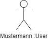
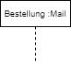
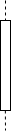

Ein Sequenzdiagramm ist eine Art von Interaktionsdiagramm in der Unified Modeling Language (kurz: UML) und bildet die Interaktion zwischen einer Gruppe von Objekten sowie die Reihenfolge ab.
Software-Entwickler und Unternehmen greifen auf diese Diagramme zurück, um zu verstehen, welche Anforderungen ein neues System stellt oder um bereits bestehende Prozesse grafisch festzuhalten. Ein Sequenzdiagramm kann auch als Ereignisdiagramm oder Ereignisszenario bezeichnet werden.
Um den Aufbau von Sequenzdiagrammen zu verstehen, muss man zunächst mehr über die Aufgabe der Unified Modeling Language (UML) wissen. UML ist ein Modellierungs-Toolkit, das die Erstellung und Notation verschiedener Diagrammarten, wie zum Beispiel Verhaltens-, Interaktions- und Strukturdiagrammen, regelt.
| Bild | Name | Erklärung |
|---|---|---|
|  | Akteur (mit Klasse) | menschlicher Anwender |
| Lebenslinie | läuft solange, wie der Akteur/das Objekt teilnimmt | |
| Zeitachse | ||
|  | Teilnehmer / Objekt (mit Klasse) |
(Unter-) Programme die am Geschehen teilhaben |
|  | aktive Zeit | Zeitraum, in der der Teilnehmer aktiv ist (warten ist auch eine Aktivität) |